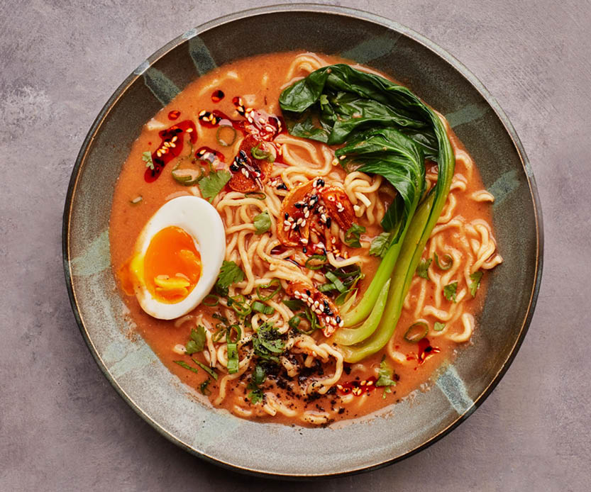

Soy sauce, wasabi, and pickled ginger (for serving)
Recipe:
Cook the rice: Rinse and cook sushi rice. Mix rice vinegar,
sugar, and salt, then fold into the cooked rice.
Prepare the fillings: Slice fish and vegetables into thin
strips.
Assemble sushi rolls: Place a nori sheet on a bamboo mat,
spread rice evenly over it, and place fish and vegetables in the
center. Roll it tightly using the mat and slice.
Serve: Serve with soy sauce, wasabi, and pickled ginger.
Ramen

Ingredients:
4 cups chicken or pork broth
2 tbsp soy sauce
1 tbsp miso paste
1 tbsp sesame oil
2 packs ramen noodles
2 soft-boiled eggs
Sliced pork belly (chashu)
Green onions, nori, and bamboo shoots (for garnish)
Recipe:
Make the broth: Heat chicken or pork broth, mix in soy sauce, miso,
and sesame oil, then simmer.
Cook noodles: Boil the ramen noodles in water according to the
package instructions.
Assemble the bowl: Place cooked noodles in bowls, pour hot broth
over them, and top with pork, soft-boiled eggs, green onions, and
other garnishes.
Serve: Serve hot with additional toppings like nori or chili oil.
Tempura
Ingredients:
1 cup all-purpose flour
1 egg
1 cup cold water
Shrimp, sweet potatoes, zucchini (for frying)
Oil (for frying)
Dipping sauce (soy sauce, dashi, mirin)
Recipe:
Prepare the batter: Beat the egg and mix with cold water. Gradually
whisk in flour, leaving the batter slightly lumpy.
Prepare ingredients: Peel and devein shrimp; slice vegetables
thinly.
Fry: Heat oil in a pot. Dip shrimp and vegetables in the batter,
then fry until golden brown.
Serve: Serve with a light dipping sauce made from soy sauce, dashi,
and mirin.